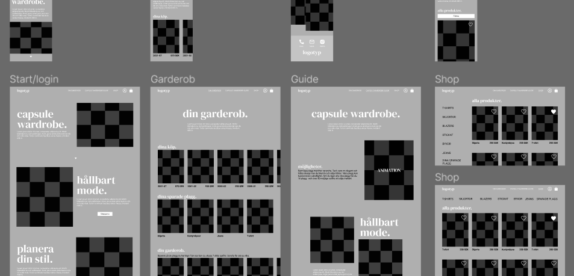
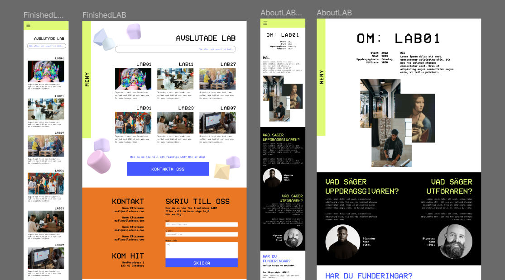

A combination of methods are used during the development of a user interface. The design process is iterative and can ofcourse vary from case to case, but if I were to describe it as a simplified workflow it would look something like this. The methods described below have been used to develop the user interfaces that are presented in my portfolio. All UI:s have been developed in Figma (however, I am comfortable working with corresponding softwares, too).
In order to develop a great design solution, potential problems must be understood and user needs must be analyzed. What obstacles must be torn down? What needs should be met? Who is the user - are there any specific needs or wishes that should be taken into account?
The identified needs are a central part of the development process, as they make it possible for the team to have a shared image of what work needs to be carried out. The needs can be beneficially transformed into a "How might we..."-question, in order to inspire a solution oriented mindset in the team. For example: "How might we design an easy-to-use-website where elderly people can rent out their apartments, that provides the elderly user with a sense of reliability and trust in the technology?”
To avoid conformist thinking at an easly stage, brainwriting is used to generate a multitude of proposals of what the design solution could look like. The team members create individual, crude design proposals with an additional moodboard to amplify the character of the proposal.
Thereafter, brainstorming is used as a tool to obtain new perspectives. The proposals are presented and discussed, and by doing so additional ideas come to life. An open and allowing mindset is sought-after in this scenario, to create room for creativity and new ideas. This is why Kenneth Österlins three rules for brainstorming are applied:
1. It is forbidden to critique your own or other team members ideas.
2. We strive for a wide variety of ideas.
3. It is encouraged to combine or further develop already presented ideas.
The developed ideas can be evaluated and further discussed, until there is a promising basis for the continuing work. At this point, the next step begins: the making of a greybox.
A crude design, a skeleton for coming design work, is developed to secure that wanted functions and content will be included in the interface. This design is not pixel perfect, the focus is solely on page structure and functionality.
A greybox model can with advantage be used for user testing at an early stage in the design process. It is possible to test functionality, make according updates and test again with minimal effort and time consumption. This facilitates the development by making it possible to avoid major changes when the design has reached a higher level of maturity, hence saving both time and money for the project.
A greybox that has delivered satisfactory results during user testing is ready for colour and shaping. A stylesheet is created and applied to the greybox. A detailed and prototyped mockup is created, with interactive buttons and a visual design suited for the purpose of the interface. Components, text- and color-styles are created and used in the mockup to secure consistent visual design throughout the entire interface. This can also be helpful for web developers who are familiar with Figma.
To make sure that the interface is easy to understand or learn, testing of the whole or parts of the interface is performed. By observing the test persons interactions with the interface, in addition to asking supplementary questions about the user experience, it is possible to highlight UI areas in need of further development.
To ensure that the design is accessibility adjusted for the web, it is checked with WCAG-plugins. That way a visual design with sufficient contrast and font size can be delivered.